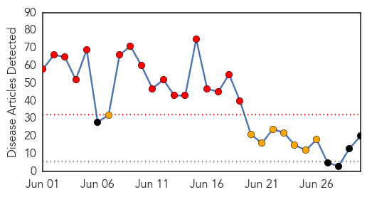

30 Day Trends
Web: 17 alerts, 8 warnings
Twitter: 8 alerts, 0 warnings
Top Articles:
- 0.999
- Middle East respiratory syndrome coronavirus (MERS-CoV) – Republic of Korea
- 0.998
- Oriental medicine may help treat MERS
- 0.998
- Origins, treatment of MERS
- 0.997
- MERS outbreak: hospitals not checking travel history
- 0.997
- Death toll from MERS in South Korea rises to 33 people
- 0.996
- Three South Koreans confined in Manila hospital
- 0.995
- No new MERS cases for three days
- 0.994
- MERS-CoV Infection: Action Plan Drawn up for Haj Pilgrims
- 0.994
- MERS-CoV infection: Action plan drawn up for Haj pilgrims
- 0.991
- 3 South Koreans admitted to RITM negative for MERS
- 0.986
- Korean student suspected of MERS quarantined in Bacolod
- 0.980
- First-Ever Potential Treatment for MERS Identified
- 0.977
- First-ever potential treatment for MERS identified
- 0.975
- Two antibodies show early promise in preventing and treating MERS
- 0.970
- Potential treatment to cure MERS identified
- 0.969
- American Journal of Respiratory and Critical Care Medicine publishes overview of MERS-CoV outbreak in Korea
- 0.967
- News Scan for Jun 30, 2015
- 0.937
- HCM City issues plan against looming MERS spread
- 0.929
- 3 Koreans at RITM have no Mers—DOH
- 0.912
- 3 Koreans in Philippines negative for MERS
Top Tweets:
-
No tweets found for Jun 30, 2015
Web/News Articles
Tweets